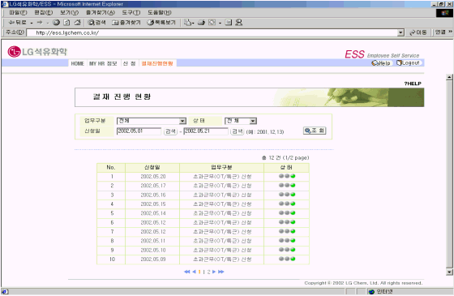
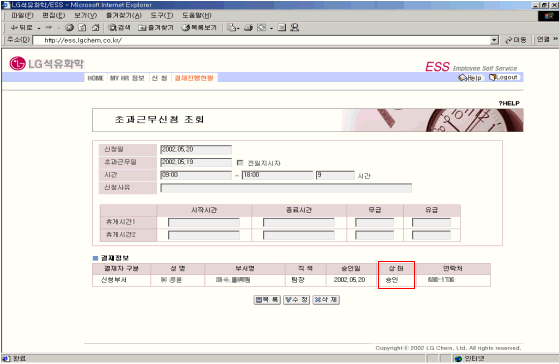

| Ⅰ. 개요 |
| 1. 개요 |
| 개인이 신청한 사항에 대한 결재진행현황을 조회하는 화면이다. |
| Ⅱ. 화면사용법 및 유의사항 |
| <그림 1. 결재진행현황 목록 화면> |
|  |
| 1) 업무구분, 상태 (미결재/진행중/결재완료), 신청일자에 따라 결재진행현황을 조회한다. |
| 2) 결재 Status (상태) 정보를 제공한다. |
| 3) 신청한 항목을 클릭하면 상세 신청 내역을 조회할 수 있다. |
| <그림 2. 결재진행현황 상세 화면> |
|  |
| 1) 본인이 신청한 항목을 조회하여 수정 및 삭제를 할 경우에는 차상위 결재자의 결재가 이루어지기 |
| 전까지만 가능하다. |
| 2) 결재상태에 따라 결재자의 결재 승인 내역을 확인할 수 있다. |
| 3) 최종 결재자가 결재를 하였을 경우 결재진행현황에서 확인이 가능하고 본인의 Eloffice 내 E-mail로도 |
| 통보된다. |